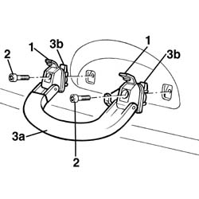

7065C30 interior l/h or r/h grab handle (one) - r+r
- Path
- Procedures > 70 FITTINGS > 7065 SEAT BELTS AND ACCESSORIES > 7065C accessories and decorations > 7065C30 interior l/h or r/h grab handle (one) - r+r
- Kind
- repair procedure (removal / refitting; the operation number is the code)
- Applies to
- all engines; all production periods
- Interactive page
- https://sloeber94.github.io/elrnDB-a156/en/#/3238984
Applies to: all engines; all production periods
 Removing
Removing
 Refitting
Refitting1. Lower handle and remove badge.
2. Unscrew screws.
3. Remove handle (3a) by removing it from stops (3b).

Applies to: all engines; all production periods
Refitting
RemovingCheck handle is not damaged.
Reassembly handle by inserting it in stops.
Tighten screws.
Put badges on.